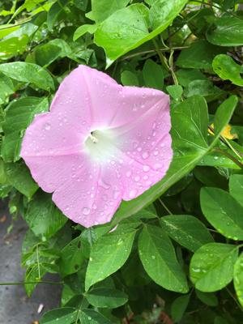
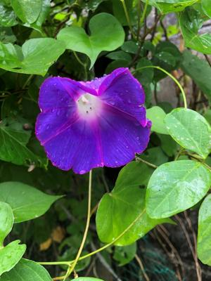
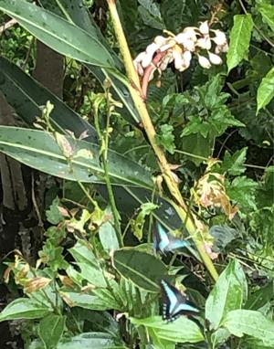

うるがいの話 ある日
最新: 哲学【うるがいの話 ある日】とは 一日だけのプログです
『うるがいの話』の最新一日だけのプログで、通信料が少なく経済的だ。カニの画像をクリックすると全ての日付が載る『うるがいの話』サイトを表示します
|
|
【うるがいの話】 うるがい(ｳﾙｶﾞｲ urugai)とは、『もずくがに』の名前でとても大きくなります。 |
|---|---|
|
|
【カミマヤーの話】 猫のことを方言でマヤーといいます。カミマヤー（kamimayaa）とは、神の猫のことです。 |
|
【たながぁの音楽】 たながぁ（ﾀﾅｶﾞｰ tanagaa）とは手長えびのことで、何種類かあり大きいのは車 エビぐらいになります。 |

|
【ぶながぁの話】 ぶながぁ(ﾌﾞﾅｶﾞｰ bunagaa)とは、赤い髪の毛、赤い身体、そして身長は１ｍ２０ｃｍ ぐらい、川の蟹を食べているの目撃された。場所は沖縄県国頭郡大宜味村のと ある村僕の隣近所に住んでいる爺さんから、聞いた話です。 |
|
|
【ギーマの話】 ギーマ(giima)とは、山原の里山に咲くスズランに似た、 花を付けます。実は食べられます、 気が付くと口の周りが紫になっています。 |
2022年05月14日 (土）哲学
16:03
  
アン・ルーニー、白取春彦(序文)、田口未和【訳】の自分の頭で考えたい人の
ための１５分間哲学教室 の序文から
では、哲学を知って自分で考える力をもつようになれば、自分の価値観や倫理
観は確立するのだろうか。はっきり言えば、確立なんかできない。でも、ヒト
ラーみたいな人間がまた出てきたら、あいつはペテン師だぞと反対の声をあげ
ることはできる。それで死ぬかもしれないが、戦場で他の国の若者を殺して良
心の痛みを抱きながら苦しんで生きるよりましかもしれない。少なくとも、自
分の意見を言えて流されない人間になることができる。哲学を知れば深く考え
るようになるからかえって悩むこともあるだろうが、それは誰の意見に賛成す
れば得だろうかという世間的な悩みではなくなる。悩み方がちょっとだけ上等
になるわけだ。
いちいち納得する。日々ウクライナの戦争番組をみているからのさらである。
明日の本土復帰に絡んで特別番組が、沢山報道されている。ただ、復帰の日の
記憶は全くないヤンバルの少年だった。昨日大腸検査をした（問題なし）ヨメ
も記憶にないといっている。とある番組で百ドルで家が建ったと言う話があっ
たが、私は千ドルで家が建つという話を覚えている。上空でヘリコプターが飛
んで五月蠅い。
１６時００分 ビットコインの総資産 ￥１１、０５２↓